Previous slide Next slide Toggle fullscreen Open presenter view
CEN429 Güvenli Programlama · Hafta 1
Güvenli Programlamaya Giriş ve Uygulama Koruma Planı
CEN429 Güvenli Programlama — Hafta 1
Dr. Öğr. Üyesi Uğur CORUH · 18.09.2026
RTEÜ Bilgisayar Mühendisliği · 2026-2027 Güz
CEN429 Güvenli Programlama · Hafta 1
0. Temel kavramlar (sıfırdan)
RTEÜ Bilgisayar Mühendisliği · 2026-2027 Güz
CEN429 Güvenli Programlama · Hafta 1
Neden bu bölüm?
Bu ders "güvenlik", "zafiyet", "tehdit modeli" gibi terimlerle dolu.
Hiçbirini bilmediğinizi varsayıyoruz.
Önce hepsini tek tek tanımlayalım.
RTEÜ Bilgisayar Mühendisliği · 2026-2027 Güz
CEN429 Güvenli Programlama · Hafta 1
Güvenlik nedir?
Güvenlik: bir sistemi, ona zarar vermek isteyen birine karşı korumak.Normal hata: yanlışlıkla olur.
Güvenlik: kasıtlı bir saldırgan var.
RTEÜ Bilgisayar Mühendisliği · 2026-2027 Güz
CEN429 Güvenli Programlama · Hafta 1
Varlık (asset) nedir?
Varlık: korumaya değer her şey (veri, anahtar, işlev).Örnek: parola, kredi kartı, lisans, kullanıcı verisi.
Güvenlik "neyi koruyoruz?" ile başlar.
RTEÜ Bilgisayar Mühendisliği · 2026-2027 Güz
CEN429 Güvenli Programlama · Hafta 1
Tehdit ve zafiyet
Tehdit: olabilecek kötü bir olay (veri çalınması).Zafiyet: bunu mümkün kılan zayıf nokta (denetimsiz girdi).Tehdit + zafiyet + saldırgan = risk.
RTEÜ Bilgisayar Mühendisliği · 2026-2027 Güz
CEN429 Güvenli Programlama · Hafta 1
Tehdit · zafiyet · varlık — şema
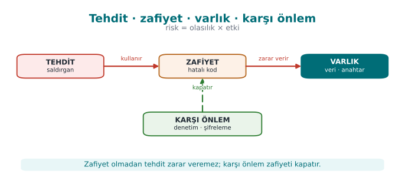
RTEÜ Bilgisayar Mühendisliği · 2026-2027 Güz
CEN429 Güvenli Programlama · Hafta 1
CIA üçlüsü
Güvenliğin üç temel hedefi:
Gizlilik (C): yalnız yetkili görsün.Bütünlük (I): izinsiz değişmesin.Erişilebilirlik (A): gerektiğinde çalışsın.
RTEÜ Bilgisayar Mühendisliği · 2026-2027 Güz
CEN429 Güvenli Programlama · Hafta 1
Saldırgan modeli
Saldırgan modeli: "saldırgan neyi görebilir/yapabilir?"Ağdan mı bağlanıyor, cihaza mı sahip?
Savunmayı buna göre tasarlarız.
RTEÜ Bilgisayar Mühendisliği · 2026-2027 Güz
CEN429 Güvenli Programlama · Hafta 1
Beyaz kutu / MATE
MATE (Man-At-The-End): programa sahip saldırgan.Kodu okur, belleği görür, değiştirir.
Mobil/masaüstü uygulamanın gerçek durumu (bu dersin ana teması).
RTEÜ Bilgisayar Mühendisliği · 2026-2027 Güz
CEN429 Güvenli Programlama · Hafta 1
Tehdit modelleme
Tehdit modelleme: "neyi, kime karşı, nasıl koruyacağız?" sorusunu sistemli yanıtlamak.Varlıkları, tehditleri, önlemleri listeler.
Bugün STRIDE ve saldırı ağaçlarıyla yapacağız.
RTEÜ Bilgisayar Mühendisliği · 2026-2027 Güz
CEN429 Güvenli Programlama · Hafta 1
STRIDE
Tehditleri altı harfle sınıflandıran yöntem:
S poofing, T ampering, R epudiation, I nformation disclosure, D enial of service, E levation of privilege.Her öğe için "hangi tehdit?" diye sorar.
RTEÜ Bilgisayar Mühendisliği · 2026-2027 Güz
CEN429 Güvenli Programlama · Hafta 1
Saldırı ağacı
Saldırı ağacı: bir hedefi (ör. "anahtarı çal") alt adımlara bölen ağaç.Kök: saldırganın amacı.
Dallar: bunu başarmanın yolları.
RTEÜ Bilgisayar Mühendisliği · 2026-2027 Güz
CEN429 Güvenli Programlama · Hafta 1
Veri akış diyagramı (DFD)
DFD: verinin sistemde nasıl aktığını gösteren şema.Süreç, veri deposu, dış varlık, akış, güven sınırı.
Tehditleri bulmak için harita.
RTEÜ Bilgisayar Mühendisliği · 2026-2027 Güz
CEN429 Güvenli Programlama · Hafta 1
Katmanlı savunma
Katmanlı savunma (defense in depth): tek önlem değil, birçok önlem.Biri aşılırsa diğeri durdurur.
"Güvenlik kabuğu" bu katmanların birleşimi.
RTEÜ Bilgisayar Mühendisliği · 2026-2027 Güz
CEN429 Güvenli Programlama · Hafta 1
Güvenli tasarım ilkeleri
Saltzer & Schroeder (1975): en az yetki, güvenli varsayılan, ekonomi, açık tasarım…
Bugün hâlâ geçerli.
Bu dersin omurgası.
RTEÜ Bilgisayar Mühendisliği · 2026-2027 Güz
CEN429 Güvenli Programlama · Hafta 1
Ödünleşim (trade-off)
Her koruma bir bedel getirir: hız, karmaşıklık, maliyet.
Güvenlik "sonsuz koruma" değil, dengeli koruma.
Kalan riski açıkça yazarız.
RTEÜ Bilgisayar Mühendisliği · 2026-2027 Güz
CEN429 Güvenli Programlama · Hafta 1
Şimdi hazırız
Terimler:
güvenlik · varlık · tehdit/zafiyet · CIA · saldırgan modeli · MATE · tehdit modelleme · STRIDE · saldırı ağacı · DFD · katmanlı savunma · tasarım ilkeleri · ödünleşim
Şimdi: güvenlik nedir, derinlemesine.
RTEÜ Bilgisayar Mühendisliği · 2026-2027 Güz
CEN429 Güvenli Programlama · Hafta 1
Bugünün planı (3 saat)
Saat
Konu
1
Ders tanıtımı · Güvenlik nedir? · Saldırgan · İlkeler · Uygulama korumasına genel bakış
2
Koruma planı · STRIDE ve risk puanı · Saldırı ağacı · Uygulamalı örnek "Kasa" · Sınıf alıştırması
3
Demo 1–2 · Güvenli başlatma · Taşmalar · Demo 3–4 · Bellek yönetimi · Bölümleme · Güvenli süreç · Proje
Demolar: code/week-01 — Windows .\demo.ps1 · WSL / Linux sh demo.sh · Visual Studio: Klasör Aç → code
RTEÜ Bilgisayar Mühendisliği · 2026-2027 Güz
CEN429 Güvenli Programlama · Hafta 1
Kısa tarihçe — güvenli programlama fikri
1975 — Saltzer & Schroeder: güvenli tasarımın 8 ilkesi (en az ayrıcalık, derinlemesine savunma…)1970–80'ler — CIA üçlüsü ortak dil hâline gelir1998–99 — Microsoft'ta STRIDE ; Schneier saldırı ağaçlarını tanıtır2001–03 — Building Secure Software ve Secure Programming Cookbook (dersin ana kaynağı)
Bugünkü araçlar (CIA · saldırgan modeli · STRIDE · saldırı ağacı) bu çizginin ürünüdür.
RTEÜ Bilgisayar Mühendisliği · 2026-2027 Güz
CEN429 Güvenli Programlama · Hafta 1
Ders nasıl yürüyor?
Tek dönem projesi: C/C++ uygulaması + "sertifikasyondan geçecekmiş gibi" bir güvenlik kılavuzu
Vize kontrolü: 7. hafta gösterim · Final kontrolü: 15. hafta gösterim
İki quiz: 8. hafta (1–6) · 16. hafta (9–14)Not: Vize = 0,6·Proje1 + 0,4·Quiz1 · Final = 0,7·Proje2 + 0,3·Quiz2
Her hafta: hatalı kod → saldırı → düzeltme
⚠️ Etik: Teknikleri yalnız kendi bilgisayarınızda ve verilen demolar üzerinde deneyin.
RTEÜ Bilgisayar Mühendisliği · 2026-2027 Güz
CEN429 Güvenli Programlama · Hafta 1
1. Güvenlik nedir?
RTEÜ Bilgisayar Mühendisliği · 2026-2027 Güz
CEN429 Güvenli Programlama · Hafta 1
Kasa benzetmesi
Kavram
Kasa
Yazılım
Varlık Para
Parola, ödeme anahtarı
Tehdit Hırsız
Parolayı çalmak isteyen
Zafiyet Arızalı kilit
Denetlenmeyen strcpy
Saldırı Kilidi açmak
Uzun adla yönetici olmak
Karşı önlem Yeni kilit
Uzunluk denetimi
Risk Olasılık × etki
"Bulunursa bütün hesaplar gider"
RTEÜ Bilgisayar Mühendisliği · 2026-2027 Güz
CEN429 Güvenli Programlama · Hafta 1
Güvenliğin üç hedefi: CIA
Soru
Bozulursa
C onfidentiality — GizlilikYalnız yetkili görebiliyor mu?
Parolalar sızar
I ntegrity — BütünlükYetkisiz değiştirilebiliyor mu?
Bakiye, not değişir
A vailability — ErişilebilirlikGerektiğinde çalışıyor mu?
Sistem çöker
+ Kimlik doğrulama · Yetkilendirme · İnkâr edilemezlik
Soru: Bankacılık uygulaması bakiyeyi şifresiz yazıyor → ? · Alıcı IBAN yolda değişiyor → ? · Bayram gecesi çöküyor → ?
RTEÜ Bilgisayar Mühendisliği · 2026-2027 Güz
CEN429 Güvenli Programlama · Hafta 1
CIA üçlüsü — şema
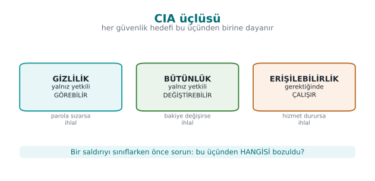
Sorunun cevabı: bakiye şifresiz → C ; IBAN yolda değişiyor → I ; bayram gecesi çöküyor → A .
RTEÜ Bilgisayar Mühendisliği · 2026-2027 Güz
CEN429 Güvenli Programlama · Hafta 1
Hata ≠ zafiyet, ama…
Güvenlik açıklarının çok büyük kısmı sıradan yazılım hatalarıdır.
Heartbleed (2014, CVE-2014-0160)
İstemci: "Bana 64 KB geri yolla" — ama yalnız birkaç bayt gönderir
Sunucu uzunluğu denetlemez → komşu belleği (parolalar, anahtarlar) geri yollar
Tek bir eksik uzunluk denetimi → internetin önemli bir kısmı etkilendi
RTEÜ Bilgisayar Mühendisliği · 2026-2027 Güz
CEN429 Güvenli Programlama · Hafta 1
Saldırgan kim, neye erişebiliyor?
Saldırgan
Erişim
Savunma
Uzaktaki
Yalnız ağ mesajları
Girdi doğrulama, TLS
Yerel kullanıcı
Dosyalar, ortam değişkenleri
İzinler, güvenli başlatma
İçeriden kişi
Kaynak kod, sunucu
Ayrıcalık ayrımı, denetim kaydı
Cihazın sahibi (beyaz kutu) Bellek, hata ayıklayıcı, ikili kod RASP, kod gizleme, whitebox
Bu dersin farkı: program saldırganın cihazında çalışıyorsa ne yaparız?
RTEÜ Bilgisayar Mühendisliği · 2026-2027 Güz
CEN429 Güvenli Programlama · Hafta 1
Saldırgan modelleri — şema
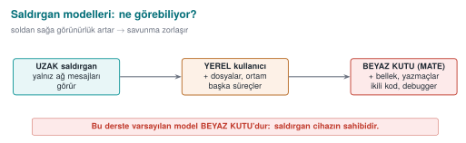
RTEÜ Bilgisayar Mühendisliği · 2026-2027 Güz
CEN429 Güvenli Programlama · Hafta 1
Güvenli tasarım ilkeleri (Saltzer & Schroeder, 1975)
İlke
Tek cümle
En az ayrıcalık
Yalnız gereken yetkiyle çalış
Güvenli varsayılan
Varsayılan "izin yok"
Tam aracılık
Her erişimi her seferinde denetle
Açık tasarım
Güvenlik algoritmanın değil anahtarın gizliliğine dayanır
Mekanizma ekonomisi
Basit = daha az hata
Ayrıcalıkların ayrılması
Kritik işe iki koşul
En az ortak mekanizma
Paylaşılan kaynağı azalt
Kabul edilebilirlik
Kullanılamayan güvenlik atlatılır
+ Derinlemesine savunma: tek önleme güvenme, katman kur.
RTEÜ Bilgisayar Mühendisliği · 2026-2027 Güz
CEN429 Güvenli Programlama · Hafta 1
2. Uygulama korumasına genel bakış
RTEÜ Bilgisayar Mühendisliği · 2026-2027 Güz
CEN429 Güvenli Programlama · Hafta 1
Neden tek bir önlem yetmez?
Önlem
Neyi çözmez?
Hatasız kod
Saldırgan ikili dosyayı açıp mantığı okur
Gizlenmiş kod
Hata ayıklayıcıyla durdurup belleği okur
İzlenmeye karşı korunan bellek
Anahtar kodda düz metin → dize taraması yeter
Gizlenmiş anahtar
Tek bir denetimi değiştirip korumayı atlar
➡️ Her katman bir öncekinin açığını kapatır; saldırgan hepsini aynı anda aşmalı
RTEÜ Bilgisayar Mühendisliği · 2026-2027 Güz
CEN429 Güvenli Programlama · Hafta 1
Yedi katman: içten dışa
#
Katman
Soru
Hafta
1
Güvenli tasarım
Neyi, kime karşı?
1–2
2
Güvenli kodlama
Kodum hatasız mı?
1, 4, 5
3
Derleyici/OS korumaları
Hata kaçarsa sömürü zor mu?
4
4
Gizleme
Kodu okuyan anlayabiliyor mu?
4, 5, 9, 14
5
RASP
Saldırı altında olduğunu fark ediyor mu?
6
6
Kriptografi
Veri ele geçse bile anlamsız mı?
3, 10, 11
7
Güvence
Çalıştığını nasıl kanıtlıyoruz?
12–13
RTEÜ Bilgisayar Mühendisliği · 2026-2027 Güz
CEN429 Güvenli Programlama · Hafta 1
Yedi katman — şema (içten dışa)
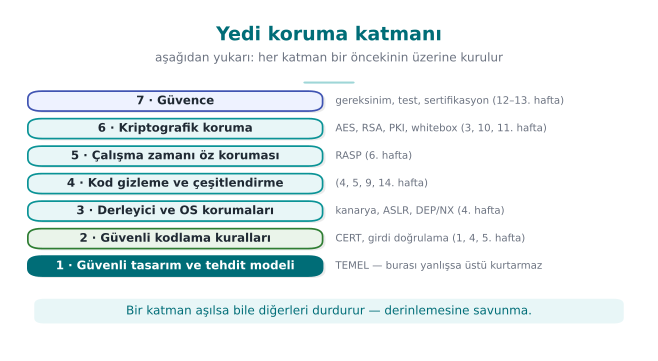
Bir hata dış katmanları geçse bile bir sonraki katman durdurmayı dener (derinlemesine savunma).
RTEÜ Bilgisayar Mühendisliği · 2026-2027 Güz
CEN429 Güvenli Programlama · Hafta 1
Güvenlik kabuğu: katmanların birleştiği yer
Hassas bir anahtar aynı anda birkaç katmanın içinde taşınır:
Diskte şifreli durur
Yalnız kullanılacağı an, yalnız gerektiği kadar çözülür
Çözüldüğü kod bölümü gizlenmiş ve bütünlüğü denetlenmiş
Süreçte hata ayıklayıcı denetimi çalışıyor
➡️ 3. haftada dört kabuklu bir tasarımı adım adım kuracağız
RTEÜ Bilgisayar Mühendisliği · 2026-2027 Güz
CEN429 Güvenli Programlama · Hafta 1
Hangi katman ne zaman? Saldırgan modeline göre
Uygulama
Saldırgan nerede?
Öncelik
Sunucu web hizmeti
Ağda; kod ve sunucuya erişimi yok
1, 2, 3, 6, 7
Masaüstü iş uygulaması
Kullanıcı bilgisayarında; kullanıcı saldırgan değil
1, 2, 3, 6
Mobil ödeme
Cihaz saldırganın elinde olabilirHepsi; özellikle 4, 5, 6
Oyun, lisanslı yazılım
Kullanıcı saldırgan
4, 5
Gömülü cihaz
Fiziksel erişim
2, 3, 6 + donanım
Beyaz kutu saldırgan: programın kendisine sahip — kopyalar, açar, değiştirir, tekrar tekrar çalıştırır
RTEÜ Bilgisayar Mühendisliği · 2026-2027 Güz
CEN429 Güvenli Programlama · Hafta 1
⚠️ Gizleme doğru kodun yerine geçmez
Gizleme saldırganı yavaşlatır , hatayı düzeltmez
Gizlenmiş bir taşma hâlâ bir taşmadır
Dış katmanlar ancak iç katmanlar sağlamsa anlam kazanır
Sunucu, istemciye asla güvenmez. Gizlenmiş istemci bile sunucuya tutarsız veri gönderebilir.
RTEÜ Bilgisayar Mühendisliği · 2026-2027 Güz
CEN429 Güvenli Programlama · Hafta 1
Korumanın bedeli
Bedel
Örnek
Performans Kontrol akışı düzleştirme bir fonksiyonu birkaç kat yavaşlatabilir
Boyut Sanallaştırma, whitebox tabloları ikili dosyayı büyütür
Bakım Gizlenmiş kodun çökme raporu okunmaz
Yanlış pozitif Aşırı hassas root algılama meşru kullanıcıyı cezalandırır
➡️ Her önlem gerekçesiyle yazılır: şu varlığı, şu saldırgana karşı, şu maliyetle
RTEÜ Bilgisayar Mühendisliği · 2026-2027 Güz
CEN429 Güvenli Programlama · Hafta 1
Değerlendirici tabloyu tersten okur
Dize taraması → anahtar, URL, hata iletisi görünüyor mu?
İkili dosyayı açma → mantık okunuyor mu?
Hata ayıklayıcı bağlama → program fark ediyor mu?
Kodu değiştirme → bütünlük denetimi yakalıyor mu?
Bellek dökümü → sır bulunuyor mu?
Durdurulmadığı her adım raporda bir bulgu olur
RTEÜ Bilgisayar Mühendisliği · 2026-2027 Güz
CEN429 Güvenli Programlama · Hafta 1
Kendini dene (3 dk)
Çevrimdışı parola yöneticisi için saldırgan modeli nedir? Hangi katmanlar önemli?"Sunucuda çalışıyor, gizlemeye gerek yok" — ne zaman doğru, ne zaman yanlış?
Yalnız gizleme kullanan bir oyunda hangi yol açık kalır?
RTEÜ Bilgisayar Mühendisliği · 2026-2027 Güz
CEN429 Güvenli Programlama · Hafta 1
Kendini dene — cevaplar
Çevrimdışı parola yöneticisi: saldırgan cihaza/dosyaya sahip (beyaz kutu). Önemli katmanlar: kriptografi (paroladan KDF + AEAD), güvenli kodlama , bir miktar gizleme/RASP."Sunucuda çalışıyor": istemciye hassas mantık/anahtar gönderilmiyorsa doğru ; istemcide çalışan kod/anahtar varsa yanlış (beyaz kutu).Yalnız gizleme: sunucu tarafı doğrulama yoksa, istemci hilesi (yamalı istemci) açık kalır — gizleme mantığı düzeltmez .
RTEÜ Bilgisayar Mühendisliği · 2026-2027 Güz
CEN429 Güvenli Programlama · Hafta 1
3. Uygulama koruma planı ve tehdit modelleme
RTEÜ Bilgisayar Mühendisliği · 2026-2027 Güz
CEN429 Güvenli Programlama · Hafta 1
Uygulama koruma planı: 7 adım
Kapsam — Neyi koruyoruz? Hangi ikili, hangi sürüm, hangi özet?Mimari ve arayüzler — Kim kiminle, hangi kanaldan konuşuyor?Varlıklar — Nerede durur, ne zaman silinir, C mi I mı?Tehditler — Saldırgan kim, varlığa hangi yoldan ulaşır?Karşı önlemler — Hangi katman, hangi önlem?Doğrulama — Çalıştığı nasıl kanıtlanıyor?Kalan risk — Kabul edilenler ve nedenleri
→ Sertifikasyonda bu plan yüzlerce sayfalık bir güvenlik kılavuzudur. Siz projede 20–30 sayfalık sürümünü yazacaksınız.
RTEÜ Bilgisayar Mühendisliği · 2026-2027 Güz
CEN429 Güvenli Programlama · Hafta 1
Koruma planı — şema
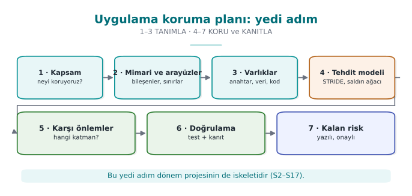
RTEÜ Bilgisayar Mühendisliği · 2026-2027 Güz
CEN429 Güvenli Programlama · Hafta 1
Örnek mimari: mobil ödeme uygulaması
TELEFON (güvenilmez) SUNUCU (güvenilir)
───────────────────── ──────────────────
Mobil uygulama
│ A
Kütüphane – Java ──── D: TLS + mesaj şifreleme ───> Arka uç + HSM
│ B (JNI)
Kütüphane – native C/C++ ── E: NFC ──> Ödeme terminali
│ C
Yerel veritabanı (şifreli)
Telefon saldırganın elinde olabilir: root, hata ayıklayıcı, bellek dökümü
En hassas işler native C/C++ katmanında
RTEÜ Bilgisayar Mühendisliği · 2026-2027 Güz
CEN429 Güvenli Programlama · Hafta 1
Mobil ödeme mimarisi — şema
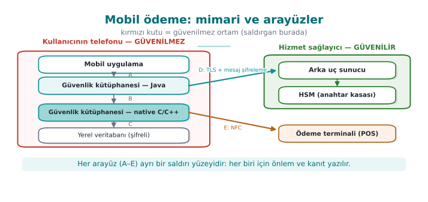
RTEÜ Bilgisayar Mühendisliği · 2026-2027 Güz
CEN429 Güvenli Programlama · Hafta 1
Arayüz ve varlık tabloları
Arayüz
Uçlar
Kimlik doğrulama
Gizlilik / bütünlük
C
native – veritabanı
—
Şifreleme + MAC, anahtar cihaza bağlı
D
SDK – sunucu
Sertifika sabitleme
TLS + ayrıca mesaj şifreleme
Varlık
Nerede
Ömür
Koruma
Tek kullanımlık ödeme anahtarı
DB (şifreli), bellek
Tek ödeme
C, I
Oturum anahtarı
Yalnız bellek
Oturum
C, I
İşlem sayacı
DB
Kalıcı
I
Listede olmayan varlık korunmuyor demektir.
RTEÜ Bilgisayar Mühendisliği · 2026-2027 Güz
CEN429 Güvenli Programlama · Hafta 1
STRIDE
Tehdit
Bozduğu
Örnek
S Kimlik taklidi
Kimlik doğrulama
Sahte uygulama SDK'yı çağırır
T Kurcalama
Bütünlük
Native denetim ikili dosyada değiştirilir
R İnkâr
İnkâr edilemezlik
"Bu ödemeyi ben yapmadım"
I Bilgi sızması
Gizlilik
Anahtar bellek dökümünden okunur
D Hizmet engelleme
Erişilebilirlik
Binlerce sahte kayıt isteği
E Yetki yükseltme
Yetkilendirme
Sıradan kullanıcı → yönetici
Veri akış diyagramını çiz → güven sınırını geçen her ok için altı harfi sor.
RTEÜ Bilgisayar Mühendisliği · 2026-2027 Güz
CEN429 Güvenli Programlama · Hafta 1
Saldırı ağacı: "Ödeme anahtarını ele geçir"
HEDEF: Ödeme anahtarı — VEYA (biri yeter)
Veritabanını çöz — VE (hepsi gerekir): root yetkisi al + veritabanı anahtarını bulBellekten oku — VEYA : hata ayıklayıcı bağla | bellek dökümü al | fonksiyona kanca atTrafiği dinle — VE : TLS'i kır + mesaj düzeyi şifrelemeyi kır
RTEÜ Bilgisayar Mühendisliği · 2026-2027 Güz
CEN429 Güvenli Programlama · Hafta 1
Saldırı ağacı — şema
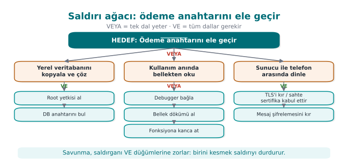
RTEÜ Bilgisayar Mühendisliği · 2026-2027 Güz
CEN429 Güvenli Programlama · Hafta 1
Saldırı ağacından çıkan sonuçlar
"Trafiği dinle" yolu iki katmanı birden kırmayı gerektirir → pahalı → derinlemesine savunma çalışıyor
"Bellekten oku" yolunun üç alternatifi var → en zayıf nokta bellekteki anahtar
Bu hafta: Demo 2 (bellekte kalan sır)
Hafta 6: çalışma zamanı koruması (hata ayıklayıcı, kanca algılama)
Hafta 11: whitebox kriptografi (anahtar bellekte hiç açık durmaz)
Savunmacının hedefi: saldırganı VE düğümlerine zorlamak
RTEÜ Bilgisayar Mühendisliği · 2026-2027 Güz
CEN429 Güvenli Programlama · Hafta 1
Veri akış diyagramı: beş sembol
Sembol
Adı
Örnek
▭ Dikdörtgen
Dış varlık
Kullanıcı, ödeme terminali
◯ Daire
Süreç
Giriş modülü, kripto kütüphanesi
═ İki çizgi
Veri deposu
Veritabanı, yapılandırma dosyası
→ Ok
Veri akışı
HTTP isteği, fonksiyon çağrısı
┄ Kesikli çizgi
Güven sınırı İnternet ↔ sunucu, uygulama ↔ OS
➡️ Güven sınırını geçen her oku kırmızıya boyayın: incelemeye oradan başlayın
RTEÜ Bilgisayar Mühendisliği · 2026-2027 Güz
CEN429 Güvenli Programlama · Hafta 1
Hangi öğeye hangi harf?
Öğe
S
T
R
I
D
E
Dış varlık
✔
✔
Süreç
✔
✔
✔
✔
✔
✔
Veri deposu
✔
✔¹
✔
✔
Veri akışı
✔
✔
✔
¹ Denetim kaydıysa · Veri akışının "kimliği" yoktur → S sorulmaz
RTEÜ Bilgisayar Mühendisliği · 2026-2027 Güz
CEN429 Güvenli Programlama · Hafta 1
Her harf için soru ve önlem
Harf
Kendinize sorun
Tipik önlem
S Karşı taraf gerçekten o mu?
Kimlik doğrulama, imza, sertifika sabitleme
T Değiştirilse fark eder miyim?
MAC/HMAC, imza, bütünlük denetimi
R "Ben yapmadım" derse kanıtım var mı?
Kurcalamaya dayanıklı günlük, imzalı işlem
I Diskte, ağda, bellekte, günlükte sızar mı?
Şifreleme, bellek temizleme, maskeleme
D Çökertilebilir, tüketilebilir mi?
Girdi sınırı, oran sınırlama, kota
E Az yetkili, çok yetkilinin işini yaptırabilir mi?
En az ayrıcalık, tam aracılık, bellek güvenliği
Bir taşma = D (çöker) + E (akış ele geçer) + I (bitişik sır okunur)
RTEÜ Bilgisayar Mühendisliği · 2026-2027 Güz
CEN429 Güvenli Programlama · Hafta 1
Risk puanı: olasılık × etki
Etki 1
Etki 2
Etki 3
Olasılık 3 3
6
9 kritik
Olasılık 2 2
4
6
Olasılık 1 1
2
3
Olasılık: fiziksel erişim mi, internetten mi? Uzmanlık? Otomatikleşir mi?Etki: hangi varlık, kaç kullanıcı, parasal/hukuki sonuç?Daha ayrıntılı: CVSS (2. hafta), saldırı potansiyeli (13. hafta)
RTEÜ Bilgisayar Mühendisliği · 2026-2027 Güz
CEN429 Güvenli Programlama · Hafta 1
Tehdide dört yanıt
Azalt — önlem ekle (en sık)Ortadan kaldır — özelliği hiç yazma (en güçlü)"Parolayı hatırla" yoksa, diskteki parola tehdidi de yok Aktar — kart verisini saklama, ödeme sağlayıcısına bırakKabul et — gerekçesiyle kalan risk listesine yaz
⚠️ Plana yazılmamış risk kabul edilmiş değil, gözden kaçmıştır
RTEÜ Bilgisayar Mühendisliği · 2026-2027 Güz
CEN429 Güvenli Programlama · Hafta 1
4. Uygulamalı örnek: "Kasa" parola kasası
RTEÜ Bilgisayar Mühendisliği · 2026-2027 Güz
CEN429 Güvenli Programlama · Hafta 1
Adım 0–1: Uygulama ve kapsam
Kasa: C++ masaüstü parola kasası
Ana parola → türetilen anahtar → kayıtlar tek dosyada şifreli
Panoya kopyalama · isteğe bağlı bulut yedek · otomatik güncelleme
Alan
Değer
Değerlendirme hedefi
kasa 1.0 + kasa_cekirdek + yapılandırma
Kapsam dışı
Yedek sunucusunun kendisi, işletim sistemi
Güvenlik amacı
Ana parolayı bilmeyen için okunamaz ve fark edilmeden değiştirilemez
RTEÜ Bilgisayar Mühendisliği · 2026-2027 Güz
CEN429 Güvenli Programlama · Hafta 1
Adım 2: Mimari ve arayüzler
Arayüz
Uçlar
Kimlik doğrulama
Gizlilik / bütünlük
A
Kullanıcı → Arayüz
Ana parola
Ekranda gösterilmez
B
Arayüz → Çekirdek
Aynı süreç
Parola çağrı sonrası silinir
C
Çekirdek → Kasa dosyası
—
AES-GCM, anahtar paroladan
D
Çekirdek → Pano
—
30 s sonra temizlenir
E
Çekirdek → Yedek sunucu
Sertifika + belirteç
TLS + zaten şifreli dosya
F
Arayüz → Güncelleme
Paket imzası TLS; asıl güvence imza
RTEÜ Bilgisayar Mühendisliği · 2026-2027 Güz
CEN429 Güvenli Programlama · Hafta 1
Kasa mimarisi — şema
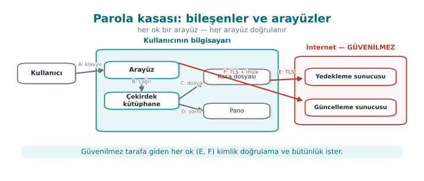
RTEÜ Bilgisayar Mühendisliği · 2026-2027 Güz
CEN429 Güvenli Programlama · Hafta 1
Adım 3: Varlıklar
#
Varlık
Nerede
Oluşma → silinme
Koruma
V1
Ana parola
Yalnız bellek
Yazılır → türetilir → hemen silinir
C
V2
Kasa anahtarı
Yalnız bellek
Türetilir → kilitlenince silinir
C, I
V3
Çözülmüş kayıt
Bellek
Görüntülenir → kapanınca silinir
C
V4
Kasa dosyası
Disk, yedek
Kalıcı
C, I
V5
Tuz, türetme parametresi
Dosya başlığı
Oluşturulurken
I
V6
Güncelleme açık anahtarı
Uygulamaya gömülü
Derlemede
I
Koruma sınıfları: C gizlilik · I bütünlük · I+ bütünlük + hesap verebilirlik · N yok
RTEÜ Bilgisayar Mühendisliği · 2026-2027 Güz
CEN429 Güvenli Programlama · Hafta 1
Adım 4: Tehditler
#
Nerede
Harf
Tehdit
Risk
T1
C / V4
I
Çalınan dosya, zayıf parola çevrimdışı denenir
9
T2
B / V1-2
I
Parola/anahtar bellekte kalır → döküm, takas
6
T3
D / V3
I
Panodaki parolayı başka uygulama okur
6
T5
C / V5
T
Yineleme sayısı 1'e düşürülür
3
T6
F / V6
T, E
Sahte güncelleme kurulur
6
T8
Süreç
T
Kasa ayrıştırıcısında bellek hatası
6
RTEÜ Bilgisayar Mühendisliği · 2026-2027 Güz
CEN429 Güvenli Programlama · Hafta 1
Adım 5: Karşı önlemler
Tehdit
Önlem
Katman
T1
Yavaş türetme (Argon2id / yüksek yinelemeli PBKDF2) + parola gücü şartı6, 2
T2
Güvenli silme, mlock, döküm kapatma
2
T3
Pano 30 s sonra temizlenir
1
T4-5
Kimlik doğrulamalı şifreleme; başlık = AAD ; en düşük yineleme kodda sabit
6, 2
T6
İmzayı doğrulamadan asla çalıştırma; geri almayı reddet
6
T8
Uzunluk doğrulama + fuzzing + derleyici korumaları
2, 3, 7
RTEÜ Bilgisayar Mühendisliği · 2026-2027 Güz
CEN429 Güvenli Programlama · Hafta 1
Adım 6–7: Doğrulama ve kalan risk
Önlem
Test
Beklenen
Türetme
Süre ölçümü
≥ 250 ms
Silme
Kilitten sonra bellek dökümünde parola ara
Bulunmaz
Bütünlük
Dosyanın bir baytını değiştir
"Bozuk" der, açmaz, çökmez
İmza
Bozuk imzalı paket
Reddedilir, günlüğe yazılır
Kalan risk: kasa açıkken aynı kullanıcıyla çalışan zararlı · omuz sörfü · çok zayıf parola
⚠️ Testi olmayan önlem değerlendirici gözünde yoktur
RTEÜ Bilgisayar Mühendisliği · 2026-2027 Güz
CEN429 Güvenli Programlama · Hafta 1
Sık yapılan hatalar
Varlık unutmak: anahtarlar, belirteçler, sayaçlar, yapılandırma, kodun kendisi Güven sınırını yanlış çizmek: kendi istemcinizi "güvenilir" saymakÖnlemi tehditle eşleştirmemek: "TLS kullanıyoruz" — hangi tehdidi kapatıyor, hangisini kapatmıyor?Testsiz önlem: "siliyoruz" deyip derleyicinin silmeyi kaldırdığını fark etmemek (Demo 2)
RTEÜ Bilgisayar Mühendisliği · 2026-2027 Güz
CEN429 Güvenli Programlama · Hafta 1
Sınıf alıştırması (15 dk)
Öğrenci not sistemi: öğretim üyesi not girer, öğrenci görür, veri sunucuda.
Veri akış diyagramı + güven sınırları
Her STRIDE harfinden bir tehdit
"Notumu 45'ten 85'e çıkar" saldırı ağacı — en ucuz yol hangisi?
RTEÜ Bilgisayar Mühendisliği · 2026-2027 Güz
CEN429 Güvenli Programlama · Hafta 1
5. Program başlarken ve bellekte kalan sırlar
RTEÜ Bilgisayar Mühendisliği · 2026-2027 Güz
CEN429 Güvenli Programlama · Hafta 1
Program boş sayfayla başlamaz
Çalıştıran kişiden devraldıkları:
Ortam değişkenleri: PATH, LD_PRELOAD, IFS…
Açık dosya tanıtıcıları, çalışma dizini, umask
Kaynak sınırları, çökme dökümü ayarı
Program bunlara güvenirse, onları kontrol eden programı kontrol eder.
RTEÜ Bilgisayar Mühendisliği · 2026-2027 Güz
CEN429 Güvenli Programlama · Hafta 1
Demo 1 — PATH ile kandırma (CWE-426)
int durum = system(KOMUT);
.\demo.ps1 (Windows) · sh demo.sh (WSL / Linux)
ADIM 2 — PATH="$PWD/sahte:$PATH" ./bin/linux/rapor
Rapor tarihi:
!!! SAHTE 'date' calisti !!!
ADIM 3 — ./bin/linux/rapor_guvenli -> Rapor tarihi: Sat Sep 19 ...
RTEÜ Bilgisayar Mühendisliği · 2026-2027 Güz
CEN429 Güvenli Programlama · Hafta 1
PATH ile kandırma — şema
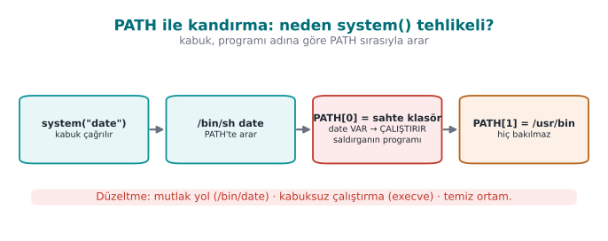
RTEÜ Bilgisayar Mühendisliği · 2026-2027 Güz
CEN429 Güvenli Programlama · Hafta 1
Düzeltme: üç kural
char *const arguman[] = { "date" , NULL };
char *const temiz_ortam[] = { "PATH=/usr/bin:/bin" , "LANG=C" , NULL };
posix_spawn(&pid, "/bin/date" , NULL , NULL , arguman, temiz_ortam);
Mutlak yol → PATH araması yokKabuk yok (posix_spawn / execve) → özel karakter, IFS yokTemiz ortam → bilinen, küçük bir ortam
Windows: CreateProcessW + System32\hostname.exe + yalnız SystemRoot
En iyisi: başka programa hiç gerek bırakma → strftime(), GetComputerNameW()
RTEÜ Bilgisayar Mühendisliği · 2026-2027 Güz
CEN429 Güvenli Programlama · Hafta 1
Güvenli başlatma: ne devralınıyor?
Devralınan
Tehlike
Tarif
Ortam değişkenleri
PATH, LD_PRELOAD yüklenecek programı/kütüphaneyi değiştirir1.1
Açık dosya tanıtıcıları
Ebeveynin gizli dosyası sızar; 0–2 kapalıysa ilk dosya "stdout" olur
1.5
umask000 → herkese yazılabilir dosyalar2.7
Kaynak sınırları
Çekirdek dökümü açık → bellek diske
1.9
Kimlik ve yetkiler
setuid: gereğinden fazla yetki
1.3
Kural: kendi kurmadığın hiçbir şeye güvenme
RTEÜ Bilgisayar Mühendisliği · 2026-2027 Güz
CEN429 Güvenli Programlama · Hafta 1
Adım 1–2: Ortam ve tanıtıcılar
clearenv();
setenv("PATH" , "/usr/bin:/bin" , 1 );
for (int fd = 0 ; fd <= 2 ; fd++)
if (fcntl(fd, F_GETFD) == -1 && open("/dev/null" , O_RDWR) != fd) abort ();
close_range(3 , ~0U , 0 );
getenv işaretçisi clearenv sonrası geçersiz Kendi dosyalarınızda her zaman O_CLOEXEC
RTEÜ Bilgisayar Mühendisliği · 2026-2027 Güz
CEN429 Güvenli Programlama · Hafta 1
Adım 3–4: İzinler ve çökme dökümü
umask(077 );
int fd = open(yol, O_WRONLY | O_CREAT | O_EXCL, 0600 );
struct rlimit r =0 , 0 };
setrlimit(RLIMIT_CORE, &r);
prctl(PR_SET_DUMPABLE, 0 , 0 , 0 , 0 );
Windows: SetErrorMode(SEM_FAILCRITICALERRORS | SEM_NOGPFAULTERRORBOX)
Asıl savunma: döküm alınsa bile içinde sır kalmamalı
RTEÜ Bilgisayar Mühendisliği · 2026-2027 Güz
CEN429 Güvenli Programlama · Hafta 1
Adım 5: Yetkiyi kalıcı bırak ve doğrula
if (setresgid(g, g, g) != 0 ) abort ();
if (setresuid(u, u, u) != 0 ) abort ();
getresuid(&r, &e, &s);
if (r != u || e != u || s != u) abort ();
seteuid() geçicidir: saklı kimlik yetkili kalır (2. hafta Demo 13)Windows: kısıtlanmış belirteç (CreateRestrictedToken)
Daha iyisi: ayrıcalık ayrımı — küçük yetkili süreç + büyük yetkisiz süreç (Tarif 1.4)
RTEÜ Bilgisayar Mühendisliği · 2026-2027 Güz
CEN429 Güvenli Programlama · Hafta 1
Adım 6: Program ve kütüphane yüklerken
❌ Hatalı
✅ Doğrusu
system("convert " + dosya)execve("/usr/bin/convert", argv, temiz_ortam)
execvp("convert", ...)Tam yolla execve
CreateProcess(NULL, "C:\Program Files\...")lpApplicationName = tam yol, komut satırı tırnaklı
LoadLibrary("yardimci.dll")SetDefaultDllDirectories(LOAD_LIBRARY_SEARCH_DEFAULT_DIRS) + tam yol
Windows DLL arama sırası = PATH sorununun ikizi (CWE-427)
RTEÜ Bilgisayar Mühendisliği · 2026-2027 Güz
CEN429 Güvenli Programlama · Hafta 1
Hepsi bir arada: guvenli_baslat()
int main (int argc, char **argv)
{
tanitici_duzenle();
ortami_temizle();
umask(077 );
dokumu_kapat();
yetkiyi_birak();
}
Sıra önemli: başka hiçbir şey yapmadan önce
RTEÜ Bilgisayar Mühendisliği · 2026-2027 Güz
CEN429 Güvenli Programlama · Hafta 1
Demo 2 — Bellekte kalan parola (CWE-14)
char parola[64 ];
n = dosya_oku(fd, parola, sizeof (parola) - 1 );
anahtar = anahtar_turet(parola, n);
memset (parola, 0 , sizeof (parola));
explicit_bzero(parola, sizeof (parola));
SecureZeroMemory(parola, sizeof (parola));
Hiç silmeyen -> parola dökümde BULUNDU
memset (-O2) -> parola dökümde BULUNDU ← !!!
explicit_bzero -> parola dökümde bulunamadı
RTEÜ Bilgisayar Mühendisliği · 2026-2027 Güz
CEN429 Güvenli Programlama · Hafta 1
Neden memset kayboldu?
Derleyicinin düşüncesi:
"parola bundan sonra hiç okunmuyor . Ona sıfır yazmak sonucu değiştirmez. Gereksiz — siliyorum. "
Ölü yazma giderme (dead store elimination): hız için iyi, sırlar için felaket .
Platform
Kaldırılamayan silme
Linux (glibc)
explicit_bzero
Windows
SecureZeroMemory
C11 Ek K
memset_s
OpenSSL
OPENSSL_cleanse
+ setrlimit(RLIMIT_CORE, 0) · mlock · sırrı kısa tut, kopyalama
RTEÜ Bilgisayar Mühendisliği · 2026-2027 Güz
CEN429 Güvenli Programlama · Hafta 1
6. Süreç belleği ve taşmalar
RTEÜ Bilgisayar Mühendisliği · 2026-2027 Güz
CEN429 Güvenli Programlama · Hafta 1
Süreç belleği — şema
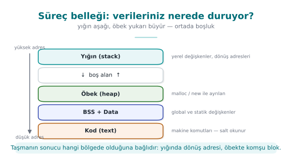
RTEÜ Bilgisayar Mühendisliği · 2026-2027 Güz
CEN429 Güvenli Programlama · Hafta 1
Süreç belleği
yüksek adres
┌──────────────────────┐
│ Yığın (stack) ↓ │ yerel değişkenler, dönüş adresleri
│ │
│ Öbek (heap) ↑ │ malloc
├──────────────────────┤
│ .data / .bss │ küresel değişkenler
├──────────────────────┤
│ .text │ makine kodu
└──────────────────────┘
düşük adres
C dizinin sonunu denetlemez. ad[16]'ya 17. bayt → arkadaki değişkenin üzerine.
RTEÜ Bilgisayar Mühendisliği · 2026-2027 Güz
CEN429 Güvenli Programlama · Hafta 1
Yapının bellekteki hali
struct oturum {char ad[16 ]; int yonetici; };
ofset: 0 ............................ 15 | 16 17 18 19
[ a y s e \0 . . . . . . ][ 00 00 00 00 ] yonetici = 0
"AAAAAAAAAAAAAAAAB" (17 karakter) kopyalanınca:
[ A A A A A A A A A A A ][ 42 00 00 00 ] yonetici = 66 (!)
'B' '\0'
Küçük uçlu (little-endian): en düşük bayt en düşük adreste.
RTEÜ Bilgisayar Mühendisliği · 2026-2027 Güz
CEN429 Güvenli Programlama · Hafta 1
Bellekteki yapı ve taşma — şema
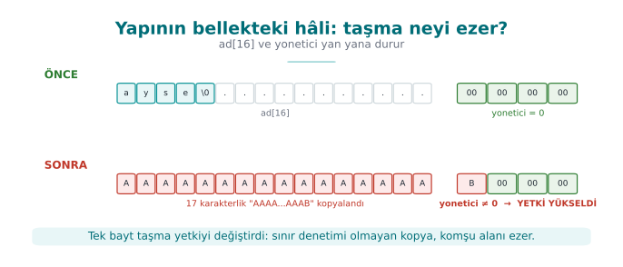
RTEÜ Bilgisayar Mühendisliği · 2026-2027 Güz
CEN429 Güvenli Programlama · Hafta 1
Arabellek taşması nedir?
Bir diziye ayrılan boyuttan fazla veri yazmak → taşan baytlar komşu değişkenlerin üzerine
C neden bu kadar kolay taşar?
Dizi boyutunu bilmez
Fonksiyona yalnız başlangıç adresi gider
Dizge = '\0' ile biten dizi; strcpy hedefi sormaz
Derleyici sınır denetimi eklemez
CWE-787 "sınırlar dışına yazma": CWE Top 25'in hep ilk sıralarında
RTEÜ Bilgisayar Mühendisliği · 2026-2027 Güz
CEN429 Güvenli Programlama · Hafta 1
Yığında bir taşma
void selamla (const char *ad) {
int yetkili = 0 ;
char tampon[16 ];
strcpy (tampon, ad);
}
düşük adres | tampon[0..15] | <- yazma buradan başlar
| yetkili | <- biraz fazlası: MANTIK bozulur
| kaydedilmiş çerçeve|
yüksek adres | dönüş adresi | <- çok fazlası: ÇÖKME / akış ele geçer
RTEÜ Bilgisayar Mühendisliği · 2026-2027 Güz
CEN429 Güvenli Programlama · Hafta 1
Yığında taşma adım adım — şema
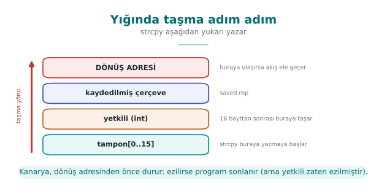
RTEÜ Bilgisayar Mühendisliği · 2026-2027 Güz
CEN429 Güvenli Programlama · Hafta 1
Taşma türleri
Tür
Tipik neden
CWE
Yığın taşması
strcpy, gets, sınırsız scanf("%s")121
Öbek taşması
Yanlış uzunluklu memcpy
122
Bir fazla (off-by-one)
<= yerine <; '\0' için yer yok193
Sınır dışı okuma
Karşı tarafın bildirdiği uzunluğa güvenmek
125
Tamsayı kaynaklı
n * boyut taşar → küçük blok, büyük kopya190 → 787
RTEÜ Bilgisayar Mühendisliği · 2026-2027 Güz
CEN429 Güvenli Programlama · Hafta 1
Heartbleed (2014): hiçbir şey yazılmadı
İstemci: "1 bayt gönderiyorum, 64 KB diye bildiriyorum"
Sunucu: bildirilen uzunluğu denetlemeden 64 KB geri yolladı
Sızan: parolalar, oturumlar, hatta sunucunun özel anahtarı
CVE-2014-0160 · CWE-125 · Düzeltme: tek bir uzunluk denetimi
➡️ Sınır dışı okuma da yazma kadar tehlikeli; üstelik çökmez, iz bırakmaz
RTEÜ Bilgisayar Mühendisliği · 2026-2027 Güz
CEN429 Güvenli Programlama · Hafta 1
Bir fazla hatası
char ad[8 ];
for (int i = 0 ; i <= 8 ; i++)
ad[i] = kaynak[i];
strncpy (ad, kaynak, sizeof ad);
printf ("%s\n" , ad);
strncpy güvenli strcpy değildir Tek bayt taşma bile komşu değişkenin en düşük baytını değiştirir
RTEÜ Bilgisayar Mühendisliği · 2026-2027 Güz
CEN429 Güvenli Programlama · Hafta 1
Tehlikeli fonksiyonlar → yerine
❌
✅
gets(s)fgets(s, sizeof s, stdin) — gets C11'de kaldırıldı
strcpy(d, s)Uzunluk denetimi + memcpy, snprintf, strlcpy (glibc 2.38+)
strcat(d, s)Kalan yeri hesapla; snprintf, strlcat
sprintf(d, ...)snprintf(d, sizeof d, ...) + dönüş değeri denetimi
scanf("%s", s)scanf("%15s", s)
memcpy(d, s, n)Önce n <= sizeof d
char a[n] (VLA), allocaSabit üst sınır ya da malloc
Tarif 3.3–3.4 bugün: snprintf/strlcpy, MSVC strcpy_s, C++ std::string/span
RTEÜ Bilgisayar Mühendisliği · 2026-2027 Güz
CEN429 Güvenli Programlama · Hafta 1
Doğru kalıp: önce doğrula, sonra sınırlı kopyala
int selamla (const char *ad)
{
char tampon[16 ];
size_t n = strnlen(ad, sizeof tampon);
if (n == sizeof tampon)
return -1 ;
memcpy (tampon, ad, n);
tampon[n] = '\0' ;
printf ("Merhaba %s\n" , tampon);
return 0 ;
}
Neden kesmek yerine reddetmek? /home/ayse/gizli_rapor.txt → /home/ayse/gizli
RTEÜ Bilgisayar Mühendisliği · 2026-2027 Güz
CEN429 Güvenli Programlama · Hafta 1
C++: boyutu tür taşır — ama dikkat
void selamla (const std::string &ad) if (ad.size () > 15 ) throw std::invalid_argument ("ad cok uzun" );
std::cout << "Merhaba " << ad << '\n' ;
}
vector::operator[] sınır denetlemez → at() denetlerc_str() ile alınan işaretçiye yazmak → C'nin bütün sorunları geri gelir
RTEÜ Bilgisayar Mühendisliği · 2026-2027 Güz
CEN429 Güvenli Programlama · Hafta 1
Taşmayı kim yakalar?
Katman
Araç
Ne zaman?
Kod
Sınır denetimi, güvenli API
Her zaman
Uyarı
-Wall -Wextra -Wformat-security · /W4 /sdlGeliştirme
Statik analiz
clang --analyze, cppcheck, /analyzeCI
Sanitizer
-fsanitize=address · /fsanitize=addressTest
Fuzzing
libFuzzer, AFL++
Test (4. hafta)
Derleyici
Kanarya -fstack-protector-strong · /GS, _FORTIFY_SOURCE
Sürüm
OS / donanım
DEP/NX, ASLR · Intel CET, ARM PAC
Sürüm
⚠️ Koruma sömürüyü zorlaştırır , hatayı gidermez — kanarya programı sonlandırır = hizmet engelleme
RTEÜ Bilgisayar Mühendisliği · 2026-2027 Güz
CEN429 Güvenli Programlama · Hafta 1
ASan raporunu okumak
ERROR: AddressSanitizer: stack-buffer-overflow
WRITE of size 21 at 0x7ffd... thread T0
#0 in strcpy
#1 in selamla ornek.c:7
#2 in main ornek.c:15
This frame has 1 object(s):
[32, 48) 'tampon' <== Memory access at offset 48 overflows this variable
Ne? yığın taşması, 21 bayt yazmaNerede? ornek.c:7, strcpyHangi değişken? tampon (16 bayt), erişim tam sınırın ötesinde
Yaklaşık 2× yavaş → yalnız test derlemesinde
RTEÜ Bilgisayar Mühendisliği · 2026-2027 Güz
CEN429 Güvenli Programlama · Hafta 1
Demo 3 — Taşmayla yetki yükseltme (CWE-121)
.\demo.ps1 (Windows) · sh demo.sh (WSL / Linux)
Sürüm
17 karakterlik saldırı
giris (korumasız)❌ YÖNETİCİ erişimi verildi
giris_asan (ASan)❌ sessiz kaldı — taşma yapının içinde
giris_asan + 40 karakter✅ stack-buffer-overflow yakalandı
giris_denetimli (_FORTIFY_SOURCE=2 / strcpy_s)✅ program durduruldu
giris_guvenli✅ Reddedildi
RTEÜ Bilgisayar Mühendisliği · 2026-2027 Güz
CEN429 Güvenli Programlama · Hafta 1
Düzeltme: doğrula, sonra sınırlı kopyala
static int ad_gecerli_mi (const char *s)
{
size_t n = strnlen(s, 16 );
if (n == 0 || n >= 16 ) return 0 ;
for (size_t i = 0 ; i < n; i++) {
unsigned char c = (unsigned char )s[i];
if (!isalnum (c) && c != '_' && c != '-' ) return 0 ;
}
return 1 ;
}
struct oturum o =0 };
snprintf (o.ad, sizeof (o.ad), "%s" , argv[1 ]);
Canary, NX, ASLR (4. hafta) sömürmeyi zorlaştırır, hatayı düzeltmez.
RTEÜ Bilgisayar Mühendisliği · 2026-2027 Güz
CEN429 Güvenli Programlama · Hafta 1
Tamsayılar: -1 ne zaman dev olur?
int işaretli · size_t işaretsiz · negatifler ikiye tümleyen
int -1 = 0xFFFFFFFFFFFFFFFF
size_t = 18 446 744 073 709 551 615
if (uzunluk > 16 ) return -1 ;
memcpy (hedef, kaynak, uzunluk);
RTEÜ Bilgisayar Mühendisliği · 2026-2027 Güz
CEN429 Güvenli Programlama · Hafta 1
Demo 4 — İşaretli uzunluk (CWE-195)
ADIM 0 GCC -Wall -Wextra: sessiz · -Wsign-conversion: uyarı
MSVC (C): sessiz · aynı kod C++ olarak: C4365
ADIM 1 kopya 8 -> Kopyalandi: ORNEK-KA
ADIM 2 kopya 100 -> Reddedildi
ADIM 3 kopya -1 -> Linux: SIGSEGV (139) · Windows: 0xC0000409
ADIM 4 ASan -> negative-size-param: (size=-1)
ADIM 5 kopya_guvenli -1 / 12abc -> Reddedildi
Kural: boyutlar size_t · alt ve üst sınır · strtol · uyarıları aç
RTEÜ Bilgisayar Mühendisliği · 2026-2027 Güz
CEN429 Güvenli Programlama · Hafta 1
7. Bellek yönetimi, bölümleme ve güvenli süreç
RTEÜ Bilgisayar Mühendisliği · 2026-2027 Güz
CEN429 Güvenli Programlama · Hafta 1
Dinamik belleğin yaşam döngüsü
Ayır → doğrula → kullan → sırrı sil → bir kez serbest bırak → işaretçiyi unut
Adım
Unutulursa
CWE
Doğrula
malloc NULL döner, denetlenmez → çökme476
Kullan
Sınır dışı yazma
787
Sırrı sil
Blok bir sonraki malloc'la başka koda gider
226
Bir kez bırak
Çift serbest bırakma
415
İşaretçiyi unut
Serbest bırakıldıktan sonra kullanma (UAF)
416
Hiç bırakmamak
Sızıntı → hizmet engelleme
401
RTEÜ Bilgisayar Mühendisliği · 2026-2027 Güz
CEN429 Güvenli Programlama · Hafta 1
Belleğin ömrü ve CWE'ler — şema
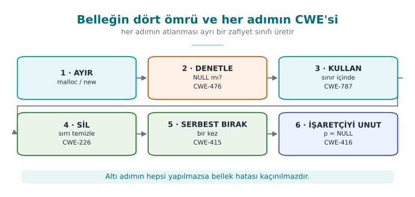
RTEÜ Bilgisayar Mühendisliği · 2026-2027 Güz
CEN429 Güvenli Programlama · Hafta 1
UAF: neden bu kadar tehlikeli?
Kullanici *aktif = malloc (sizeof *aktif);
Kullanici *onbellek = aktif;
free (aktif); aktif = NULL ;
char *not = malloc (sizeof (Kullanici));
strcpy (not, "...." );
if (onbellek->yetki) { ... }
free belleği OS'e vermez, boş listeye koyar → aynı blok yeniden verilir✅ Sahiplik kuralı: her bloğun tek sahibi var, yalnız o serbest bırakır
RTEÜ Bilgisayar Mühendisliği · 2026-2027 Güz
CEN429 Güvenli Programlama · Hafta 1
Düzeltilmiş kalıplar
Kayit *k = calloc (n, sizeof (Kayit));
if (k == NULL ) return HATA_BELLEK;
Kayit *yeni = reallocarray(k, n2, sizeof (Kayit));
if (yeni == NULL ) { free (k); return HATA_BELLEK; }
k = yeni;
❌ tampon = realloc(tampon, n); → başarısızsa eski blok kaybolur
❌ Sır tutan tamponda realloc → taşınan eski blok sıfırlanmaz
RTEÜ Bilgisayar Mühendisliği · 2026-2027 Güz
CEN429 Güvenli Programlama · Hafta 1
Sırları silmek (Tarif 13.2)
Platform
Fonksiyon
Linux, BSD
explicit_bzero(p, n)
Windows
SecureZeroMemory(p, n)
C11 Ek K / C23
memset_s / memset_explicit
Hiçbiri
volatile işaretçiyle bayt bayt
Sırrın gizli kopyaları: değerle geçirilen yapılar · realloc'un eski bloğu · std::string (SSO, silmeden yok olur) · G/Ç tamponları · takas ve hazırda bekletme dosyası
RTEÜ Bilgisayar Mühendisliği · 2026-2027 Güz
CEN429 Güvenli Programlama · Hafta 1
Diske düşmesin (Tarif 13.3) ve RAII
mlock(anahtar, sizeof anahtar);
cen429_sil(anahtar, sizeof anahtar);
munlock(anahtar, sizeof anahtar);
class GizliAnahtar {
~GizliAnahtar () { cen429_sil (v_.data (), v_.size ()); }
GizliAnahtar (const GizliAnahtar&) = delete ;
};
Kilitleme sayfa düzeyinde, miktar sınırlı → yalnız küçük anahtar bölgesi
RTEÜ Bilgisayar Mühendisliği · 2026-2027 Güz
CEN429 Güvenli Programlama · Hafta 1
Bellek hatası avcıları
Araç
Bulduğu
Kullanım
AddressSanitizer
Taşma, UAF, çift bırakma
-fsanitize=address · /fsanitize=address
LeakSanitizer
Sızıntı
ASan ile (Linux)
MemorySanitizer
İlklendirilmemiş okuma
Clang -fsanitize=memory
Valgrind
Hepsi (yavaş)
valgrind --leak-check=full ./prog
CRT hata ayıklama öbeği
Sızıntı
MSVC _CrtSetDbgFlag
Değerlendirici: işlem bittikten sonra döküm alır, test parolasını arar
RTEÜ Bilgisayar Mühendisliği · 2026-2027 Güz
CEN429 Güvenli Programlama · Hafta 1
Korunan kod bölümleme: TCB'yi küçült
Güvenilir hesaplama tabanı (TCB): "hatalıysa güvenlik çöker" dediğimiz kodun tamamı
200.000 satırlık uygulama, 2.000 satırlık korunan çekirdek
İnceleme, gizleme, bütünlük denetimi yalnız çekirdeğe → maliyet de yalnız orada
[ Arayüz ] → [ İş mantığı ] ──yalnız tutamaç + şifreli veri──▶ [ Korunan çekirdek ]
kripto · anahtar · RASP
RTEÜ Bilgisayar Mühendisliği · 2026-2027 Güz
CEN429 Güvenli Programlama · Hafta 1
Bölümleme — şema
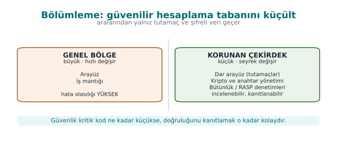
RTEÜ Bilgisayar Mühendisliği · 2026-2027 Güz
CEN429 Güvenli Programlama · Hafta 1
Bölümleme seçenekleri
Seçenek
Yalıtım
Örnek
Aynı süreçte ayrı modül
Düşük
Java uygulamasında native kütüphane
Ayrı süreç
Orta
Tarayıcı kum havuzu, yetkili yardımcı süreç (Tarif 1.4)
OS hizmeti
Orta–yüksek
DPAPI, Anahtarlık, Android Keystore
Donanım
Yüksek
Güvenli eleman, TPM, TEE
Sunucuya taşıma
En yüksek
Sır hiç istemciye gitmez, HSM'de kalır
En güçlüsü sırrı istemciden kaldırmak ; olmazsa donanım; o da yoksa yazılım koruması (bu dersin konusu)
RTEÜ Bilgisayar Mühendisliği · 2026-2027 Güz
CEN429 Güvenli Programlama · Hafta 1
Arayüz: dar, doğrulanmış, sırsız
typedef struct KasaAnahtari KasaAnahtari ;int kasa_ac (const char *parola, size_t n, const unsigned char tuz[16 ],
KasaAnahtari **cikti) ;
int kasa_coz (KasaAnahtari *a, const unsigned char *sifreli, size_t n,
unsigned char *acik, size_t kapasite, size_t *yazilan) ;
void kasa_kapat (KasaAnahtari *a) ;
Sırrı dışarı verme, iş yaptır (tutamaç)Sınırı geçen her şeyi doğrula
Sınırdan açık veri geçirme
RTEÜ Bilgisayar Mühendisliği · 2026-2027 Güz
CEN429 Güvenli Programlama · Hafta 1
Kâhin ve kod kaldırma
Şifre çözme kâhini: saldırgan kasa_coz'u kendi verisiyle çağırır — anahtara gerek yokKod kaldırma: korunan fonksiyonu olduğu gibi kopyalayıp kara kutu gibi çalıştırır
Önlem
Fikir
Cihaza/örneğe bağlama
Başka ortamda doğru sonuç çıkmaz
Sürüme bağlama
Eski/değiştirilmiş sürümde anahtar çözülmez
Bağlam denetimi
Çağıranın bütünlüğü ve akış sırası doğrulanır
Ortak statik anahtar yok
Bir kopyanın kırılması diğerlerini etkilemez
RTEÜ Bilgisayar Mühendisliği · 2026-2027 Güz
CEN429 Güvenli Programlama · Hafta 1
Şifreleme ile güvenli işleme: açıklık penceresi
Kötü: [aç] ██████████████████████████████████ [kapat] anahtar hep açık
İyi: [aç] ░░░░░██░░░░░░░░██░░░░░░░░░░░██░░░░ [kapat] yalnız işlem anında
Tam zamanında çözme → fonksiyon dönmeden silÖrtme: anahtar XOR rastgele maske — bellekte iki anlamsız parçaParçalama: farklı yerlerde, kullanımda birleştirKod şifreleme: fonksiyon kodu çalışma anında çözülür (4, 9. hafta)Whitebox: anahtar hiç açılmaz (11. hafta)
RTEÜ Bilgisayar Mühendisliği · 2026-2027 Güz
CEN429 Güvenli Programlama · Hafta 1
Açıklık penceresi — şema
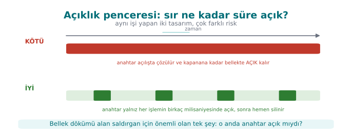
RTEÜ Bilgisayar Mühendisliği · 2026-2027 Güz
CEN429 Güvenli Programlama · Hafta 1
Güvenli geliştirme yaşam döngüsü
Aşama
Etkinlik
Hafta
Gereksinim
Standartlardan güvenlik gereksinimi
13
Tasarım
Tehdit modeli, koruma planı
1–2
Gerçekleştirme
Kodlama kuralları, yasaklı fonksiyonlar, statik analiz
4–5
Doğrulama
Sanitizer, fuzzing, sızma testi
4, 12
Yayın
İmzalı derleme, benzersiz sürüm kimliği
1, 10
Yanıt
Zafiyet bildirimi, acil güncelleme
12
Microsoft SDL · NIST SSDF (SP 800-218)
RTEÜ Bilgisayar Mühendisliği · 2026-2027 Güz
CEN429 Güvenli Programlama · Hafta 1
Benzersiz sürüm kimliği
İncelenen ile dağıtılan aynı mı? → 1.4.2 + git kimliği + ikili dosyanın SHA-256'sı
execute_process (COMMAND git rev-parse --short=12 HEAD
OUTPUT_VARIABLE GIT_KIMLIK OUTPUT_STRIP_TRAILING_WHITESPACE)
target_compile_definitions (kasa PRIVATE SURUM="1.4.2" GIT_KIMLIK="${GIT_KIMLIK}" )
Get-FileHash .\kasa.exe -Algorithm SHA256 · sha256sum ./kasa
Sahada sürüm, anahtar türetmeye de katılır → sürüm geri alma saldırısı çalışmaz
RTEÜ Bilgisayar Mühendisliği · 2026-2027 Güz
CEN429 Güvenli Programlama · Hafta 1
Değişiklik yönetimi: yedi adım
Temel çizgi → 2. Değişiklik talebi → 3. Sınıflandırma → 4. Onay ve planlama → 5. Geliştirme ve test → 6. Yayın → 7. Doğrulama
3 ile 4 arasında güvenlik etki analizi: hangi varlık, arayüz, tehdit, önlem?
Yalnız değişen kısmın incelenmesi = delta değerlendirme (13. hafta)
Depo: korumalı dallar · en az bir gözden geçiren · imzalı etiket · MFA
RTEÜ Bilgisayar Mühendisliği · 2026-2027 Güz
CEN429 Güvenli Programlama · Hafta 1
Değişiklik yönetimi — şema
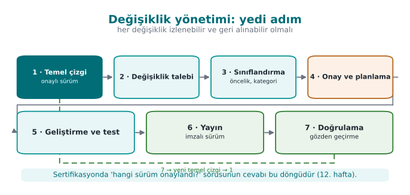
RTEÜ Bilgisayar Mühendisliği · 2026-2027 Güz
CEN429 Güvenli Programlama · Hafta 1
Ödünleşim kaydı
Karar
Seçilen
Gerekçe
Kalan risk
Sürümde günlükleme
Derleme makrosuyla tamamen kaldırıldı
Susturulmuş kod dizge olarak kalır
Sahada tanı zor
Hata kodları
Yalnız başarılı/başarısız (opak )
Ayrıntı saldırgana ipucu
Ayrı tanı kanalı
Native "debuggable" bayrağı
Açık (gerekçeli istisna)Bütünlük denetimi kendi belleğini okumalı
Debugger algılama ile telafi
Parola türetme süresi
250 ms
Bekleme ↔ kaba kuvvet dengesi
Çok zayıf parola
Yazılmamış ödünleşim = değerlendiricinin gözünde hata
RTEÜ Bilgisayar Mühendisliği · 2026-2027 Güz
CEN429 Güvenli Programlama · Hafta 1
Bu haftanın araç kutusu
İş
Linux / GCC
Windows / MSVC
Şüpheli kod uyarıları
-Wall -Wextra -Wsign-conversion/W4
Kütüphanede boyut denetimi
-D_FORTIFY_SOURCE=2 -O2strcpy_s gibi _s işlevleri
Bellek hatasını yakalama
-fsanitize=address/fsanitize=address
Bellek dökümü
gdb + gcoreMiniDumpWriteDump
Makine kodu
objdump -dVS Ayrıştırılmış Kod
Kaldırılamayan silme
explicit_bzeroSecureZeroMemory
Güvenle program çalıştırma
posix_spawn + mutlak yolCreateProcessW + tam yol
RTEÜ Bilgisayar Mühendisliği · 2026-2027 Güz
CEN429 Güvenli Programlama · Hafta 1
8. Proje ve kapanış
RTEÜ Bilgisayar Mühendisliği · 2026-2027 Güz
CEN429 Güvenli Programlama · Hafta 1
Proje: bu hafta yapılacaklar
Takım (bireysel ya da en çok 4 kişi) ve konu GitHub deposu + proje planı (iş paketleri, takvim) → onaylat
Güvenlik kılavuzu taslağı:
S0 kapak ve sürüm geçmişi · S2 ürün genel bakışıS3 mimari ve arayüz tablosu S4 saldırgan modeli · STRIDE · saldırı ağacı
RTEÜ Bilgisayar Mühendisliği · 2026-2027 Güz
CEN429 Güvenli Programlama · Hafta 1
Kendi başına çalış (not verilmez)
PATH tuzağı: ls (Linux) / whoami (Windows) ile tekrarla, tam yolla düzelt
Demo 2'de MOD optimize → MOD korumasiz: memset şimdi çalışıyor mu?
Demo 3'te 16, 17, 18, 19, 20 karakter: yonetici değerleri tablosu
struct oturum'a bakiye ekle: taşmayla 1000'in üstüne çıkar, sonra engelleKendi projenin STRIDE tablosu (≥ 8 tehdit + önlem)
Heartbleed raporunu oku: hangi denetim eksikti? Hangi CWE?
Ayrıntı ve ipuçları: ders sitesi → Hafta 1 → "Kendi başına çalış"
RTEÜ Bilgisayar Mühendisliği · 2026-2027 Güz
CEN429 Güvenli Programlama · Hafta 1
Kendini sınama
Varlık, tehdit, zafiyet farkı?
Alıcı IBAN'ın yolda değişmesi CIA'nın hangisi?
Beyaz kutu saldırganı neyi farklı yapar?
STRIDE "E" hangi demo?
VE / VEYA düğümü — savunma için hangisi iyi?
system("date") neden tehlikeli? Üç düzeltme?memset neden kayboldu?ASan 17 karakteri neden yakalamadı?
-1 memcpy'ye gidince ne olur?Derinlemesine savunma — mobil ödeme mimarisinden örnek?
RTEÜ Bilgisayar Mühendisliği · 2026-2027 Güz
CEN429 Güvenli Programlama · Hafta 1
Kendini sınama — cevaplar (1–10)
Varlık korunacak değerli şey; tehdit zarar verebilecek olası olay/aktör; zafiyet tehdidin kullanabileceği kusur.Bütünlük (Integrity) — yoldaki IBAN'ın değişmesi veri bütünlüğü ihlalidir.Beyaz kutu (MATE) programa sahiptir (belleği/anahtarı okur, kodu değiştirir); ağ saldırganı yalnız dışarıdan bağlanır.E = Elevation of Privilege (yetki yükseltme) → ayrıcalık bırakma / setuid demosu.VE (AND) savunmaya iyi: hedef tüm alt adımları ister, birini kesmek saldırıyı durdurur. VEYA saldırgana kolaylık.system kabuğu yorumlar → komut enjeksiyonu/PATH ele geçirme. Düzelt: execvp ile doğrudan çağır (kabuksuz), tam yol , girdi allowlist.Derleyici ölü mağaza olarak sildi (sonra okunmuyor). memset_s/explicit_bzero/volatile kullan.
Taşma redzone 'a ulaşmadı / o kod yolu çalışmadı; ASan yalnız enstrümante bölgeyi görür.
-1, size_t'te SIZE_MAX 'e döner → devasa kopya → taşma/çökme.Ödeme: TLS+pinning (aktarım) · AEAD (bekleme) · RASP/anti-debug · whitebox/HSM anahtar · sunucu denetimi — katman .
RTEÜ Bilgisayar Mühendisliği · 2026-2027 Güz
CEN429 Güvenli Programlama · Hafta 1
Kendini sınama (devam)
Bir veri akışına neden S sorulmaz?
Tehdide dört yanıt nedir? "Ortadan kaldırma"ya örnek verin
setuid programda neden önce grup bırakılır?
strncpy neden güvenli strcpy değildir?Heartbleed neden hiçbir şey çökmeden veri sızdırdı?
RTEÜ Bilgisayar Mühendisliği · 2026-2027 Güz
CEN429 Güvenli Programlama · Hafta 1
Kendini sınama — cevaplar (devam 1–5)
Veri akışına S sorulmaz : akışın kimliği yoktur (sahtecilik uçlara/varlıklara sorulur).
Azalt · kaldır · aktar · kabul et. "Kaldırma" örneği: "parolayı hatırla" özelliğini hiç sunmamak .setuid'de önce grup bırakılır; kullanıcı önce bırakılırsa grubu değiştirecek yetki kalmaz .strncpy uzun kaynakta sonuna sonlandırıcı koymaz → sonlandırılmamış dize.Heartbleed yalnız okudu ; okunan bellek sürecin kendi geçerli belleğiydi → çökmeden sızdı.
RTEÜ Bilgisayar Mühendisliği · 2026-2027 Güz
CEN429 Güvenli Programlama · Hafta 1
Kendini sınama (devam)
Kanarya taşmayı fark edince ne yapar? Neden hâlâ sorun?
free(p); p = NULL; neyi önler, neyi önlemez?mlock neyi önler, neyi önlemez?"Şifre çözme kâhini" nedir? Bir karşı önlem?
Benzersiz sürüm kimliğinin üç bileşeni?
RTEÜ Bilgisayar Mühendisliği · 2026-2027 Güz
CEN429 Güvenli Programlama · Hafta 1
Kendini sınama — cevaplar (devam 6–10)
Kanarya bozulunca programı sonlandırır (hizmet reddi); bitişik değişkene taşmayı görmez .
free(p); p=NULL; çift bırakma/UAF 'ı önler; takma adları (aynı adrese başka işaretçi) korumaz.mlock belleğin takasa yazılmasını önler; okunmasını ve silinmemiş sırrı önlemez.Şifre çözme kâhini: anahtarsız çözdürme imkânı. Karşı önlem: bağlam/bütünlük denetimi, çağrı sınırı, cihaza bağlama .Benzersiz sürüm: anlamsal sürüm + git kimliği + ikili SHA-256 .
RTEÜ Bilgisayar Mühendisliği · 2026-2027 Güz
CEN429 Güvenli Programlama · Hafta 1
Gelecek hafta
Hafta 2 — Bilgisayar Virüsleri ve Güvenlik Modelleri
Kötü yazılım türleri · Bell–LaPadula, Biba, Clark–Wilson · CWE, OWASP, CVSS
Kaynak: Viega & Messier, Tarif 1, 3, 12.1, 13.2–13.3
RTEÜ Bilgisayar Mühendisliği · 2026-2027 Güz
CEN429 Güvenli Programlama · Hafta 1
Ek · STRIDE'ı adım adım uygulamak
RTEÜ Bilgisayar Mühendisliği · 2026-2027 Güz
CEN429 Güvenli Programlama · Hafta 1
Örnek sistem
Bir mobil bankacılık uygulaması:
kullanıcı girişi
bakiye görüntüleme
para transferi
Her STRIDE harfini bu sisteme uygulayalım.
RTEÜ Bilgisayar Mühendisliği · 2026-2027 Güz
CEN429 Güvenli Programlama · Hafta 1
S · Spoofing (sahtecilik)
Tehdit: başkası gibi davranmak (sahte kullanıcı/sunucu).Örnek: sahte sunucu, çalınan oturum.Önlem: güçlü kimlik doğrulama, TLS + sertifika denetimi.
RTEÜ Bilgisayar Mühendisliği · 2026-2027 Güz
CEN429 Güvenli Programlama · Hafta 1
T · Tampering (kurcalama)
Tehdit: veriyi/kodu izinsiz değiştirmek.Örnek: transfer tutarını değiştirmek.Önlem: bütünlük (MAC/imza), bütünlük denetimi (RASP).
RTEÜ Bilgisayar Mühendisliği · 2026-2027 Güz
CEN429 Güvenli Programlama · Hafta 1
R · Repudiation (inkâr)
Tehdit: yaptığını inkâr etmek.Örnek: "ben o transferi yapmadım".Önlem: güvenli günlük, imza, denetim izi.
RTEÜ Bilgisayar Mühendisliği · 2026-2027 Güz
CEN429 Güvenli Programlama · Hafta 1
Tehdit: gizli verinin sızması.Örnek: bakiye/parola sızıntısı.Önlem: şifreleme, en az yetki, sızıntısız hata iletisi.
RTEÜ Bilgisayar Mühendisliği · 2026-2027 Güz
CEN429 Güvenli Programlama · Hafta 1
D · Denial of service (hizmet reddi)
Tehdit: hizmeti kullanılamaz kılmak.Örnek: aşırı istek, kaynak tüketimi.Önlem: hız sınırı, kaynak kotaları, girdi sınırı.
RTEÜ Bilgisayar Mühendisliği · 2026-2027 Güz
CEN429 Güvenli Programlama · Hafta 1
E · Elevation of privilege (yetki yükseltme)
Tehdit: izinsiz yetki kazanmak.Örnek: normal kullanıcı yönetici olur.Önlem: en az yetki, yetki denetimi, güvenli varsayılan.
RTEÜ Bilgisayar Mühendisliği · 2026-2027 Güz
CEN429 Güvenli Programlama · Hafta 1
STRIDE · özet uygulama
Harf
Bu sistemde önlem
S
TLS + kimlik doğrulama
T
MAC/imza + RASP
R
Güvenli günlük
I
Şifreleme + en az yetki
D
Hız sınırı
E
Yetki denetimi
RTEÜ Bilgisayar Mühendisliği · 2026-2027 Güz
CEN429 Güvenli Programlama · Hafta 1
Ek · Saldırı ağacı adım adım
RTEÜ Bilgisayar Mühendisliği · 2026-2027 Güz
CEN429 Güvenli Programlama · Hafta 1
Kök · hedef
HEDEF: Ödeme anahtarını ele geçir
Saldırganın nihai amacı. Şimdi yolları bölelim.
RTEÜ Bilgisayar Mühendisliği · 2026-2027 Güz
CEN429 Güvenli Programlama · Hafta 1
Dallar · nasıl?
Ödeme anahtarını ele geçir
├─ Bellekten oku (çalışırken)
├─ İkiliden çıkar (statik)
└─ Sunucudan sız (ağ)
RTEÜ Bilgisayar Mühendisliği · 2026-2027 Güz
CEN429 Güvenli Programlama · Hafta 1
Alt dallar · bellekten oku
Bellekten oku
├─ Debugger bağla
├─ Bellek dökümü al
└─ Hook ile yakala
Her yaprak bir saldırı adımı.
RTEÜ Bilgisayar Mühendisliği · 2026-2027 Güz
CEN429 Güvenli Programlama · Hafta 1
Ağaçtan önceliklendirme
En kolay yaprak en büyük risk.
Önce onu kapat (ör. RASP + kısa ömür).
Ağaç, savunma önceliğini gösterir.
RTEÜ Bilgisayar Mühendisliği · 2026-2027 Güz
CEN429 Güvenli Programlama · Hafta 1
Ağaçtan önleme eşleme
Yaprak
Önlem
Debugger
Anti-debug (6)
Bellek dökümü
Kısa ömür + koruma (6, 10)
İkiliden çıkar
Gizleme + whitebox (9, 11)
Ağdan sız
TLS + pin (10)
RTEÜ Bilgisayar Mühendisliği · 2026-2027 Güz
CEN429 Güvenli Programlama · Hafta 1
Ek · Güvenli tasarım ilkeleri derinleşme
RTEÜ Bilgisayar Mühendisliği · 2026-2027 Güz
CEN429 Güvenli Programlama · Hafta 1
En az yetki
Her bileşen yalnız gerekeni yapabilsin.
Fazla yetki = büyük saldırı yüzeyi.
Örnek: DB kullanıcısı yalnız SELECT.
RTEÜ Bilgisayar Mühendisliği · 2026-2027 Güz
CEN429 Güvenli Programlama · Hafta 1
Güvenli varsayılan (fail-safe)
Bir şey ters giderse güvenli tarafa düş.
Hata → erişim reddedilir (fail-closed).
Varsayılan: kapalı, kısıtlı.
RTEÜ Bilgisayar Mühendisliği · 2026-2027 Güz
CEN429 Güvenli Programlama · Hafta 1
Ekonomi ve açık tasarım
Ekonomi: basit tasarım, az hata.Açık tasarım: güvenlik gizliliğe değil, anahtara dayanır (Kerckhoffs).Karmaşıklık düşmandır.
RTEÜ Bilgisayar Mühendisliği · 2026-2027 Güz
CEN429 Güvenli Programlama · Hafta 1
Tam aracılık ve ayrık ayrıcalık
Tam aracılık: her erişim denetlenir (önbelleğe güvenip atlama).Ayrık ayrıcalık: kritik işlem için birden çok koşul.Derinlemesine savunmanın temeli.
RTEÜ Bilgisayar Mühendisliği · 2026-2027 Güz
CEN429 Güvenli Programlama · Hafta 1
İlkeler → bu ders
Bu ilkeler dönem boyunca her haftada tekrar edecek.
Kod, kripto, RASP, gereksinimler — hepsi bunlara dayanır.
İlkeler değişmez; teknikler değişir.
RTEÜ Bilgisayar Mühendisliği · 2026-2027 Güz
CEN429 Güvenli Programlama · Hafta 1
Ek · özet
STRIDE her öğeye altı soru sorar.
Saldırı ağacı hedefi yollara böler, önceliklendirir.
Tasarım ilkeleri her kararın pusulası.
Tehdidi modelle , sonra katmanla koru.
RTEÜ Bilgisayar Mühendisliği · 2026-2027 Güz
CEN429 Güvenli Programlama · Hafta 1
Ek · Çözümlü kendini sınama
RTEÜ Bilgisayar Mühendisliği · 2026-2027 Güz
CEN429 Güvenli Programlama · Hafta 1
Soru 1
CIA üçlüsünü bir örnekle açıklayın.
Cevap: Gizlilik: parola yalnız sahibince görülür. Bütünlük: banka bakiyesi izinsiz değişmez. Erişilebilirlik: uygulama gerektiğinde çalışır.
RTEÜ Bilgisayar Mühendisliği · 2026-2027 Güz
CEN429 Güvenli Programlama · Hafta 1
Soru 2
Hata ile zafiyet arasındaki fark nedir?
Cevap: Her zafiyet bir hatadır ama her hata zafiyet değildir. Zafiyet, bir saldırganın kötüye kullanabileceği hatadır.
RTEÜ Bilgisayar Mühendisliği · 2026-2027 Güz
CEN429 Güvenli Programlama · Hafta 1
Soru 3
MATE (beyaz kutu) saldırgan ağ saldırganından nasıl ayrılır?
Cevap: MATE programa sahiptir: kodu okur, belleği görür, değiştirir. Ağ saldırganı yalnız dışarıdan bağlanır.
RTEÜ Bilgisayar Mühendisliği · 2026-2027 Güz
CEN429 Güvenli Programlama · Hafta 1
Soru 4
STRIDE neyi sağlar?
Cevap: Tehditleri altı sınıfta sistemli aramayı: sahtecilik, kurcalama, inkâr, bilgi sızması, hizmet reddi, yetki yükseltme.
RTEÜ Bilgisayar Mühendisliği · 2026-2027 Güz
CEN429 Güvenli Programlama · Hafta 1
Soru 5
Saldırı ağacı ne işe yarar?
Cevap: Bir saldırı hedefini alt adımlara böler; en kolay/olası yolu ve önceliklendirmeyi gösterir.
RTEÜ Bilgisayar Mühendisliği · 2026-2027 Güz
CEN429 Güvenli Programlama · Hafta 1
Soru 6
Neden tek bir önlem yetmez?
Cevap: Her önlem aşılabilir; katmanlı savunmada biri aşılsa diğeri durdurur. Güç birliktelikten gelir.
RTEÜ Bilgisayar Mühendisliği · 2026-2027 Güz
CEN429 Güvenli Programlama · Hafta 1
Soru 7
"Gizleme doğru kodun yerine geçer mi?"
Cevap: Hayır. Gizleme okumayı zorlaştırır ama hatayı düzeltmez. Önce güvenli kod, sonra gizleme.
RTEÜ Bilgisayar Mühendisliği · 2026-2027 Güz
CEN429 Güvenli Programlama · Hafta 1
Soru 8
En az yetki ilkesi nedir?
Cevap: Her bileşen yalnız gereken yetkiye sahip olmalı; fazlası saldırı yüzeyini büyütür.
RTEÜ Bilgisayar Mühendisliği · 2026-2027 Güz
CEN429 Güvenli Programlama · Hafta 1
Soru 9
Bir güven sınırı nedir?
Cevap: Güvenilen ve güvenilmeyen bölgelerin ayrıldığı yer; girdi doğrulama en erken burada yapılır.
RTEÜ Bilgisayar Mühendisliği · 2026-2027 Güz
CEN429 Güvenli Programlama · Hafta 1
Soru 10
Kalan risk neden yazılır?
Cevap: Hiçbir sistem %100 güvenli değildir; bilinen ve kabul edilen riskler açıkça belgelenir.
RTEÜ Bilgisayar Mühendisliği · 2026-2027 Güz
CEN429 Güvenli Programlama · Hafta 1
Ek · İşlenmiş mini tehdit modeli
RTEÜ Bilgisayar Mühendisliği · 2026-2027 Güz
CEN429 Güvenli Programlama · Hafta 1
Ürün · sentetik
Bir "parola kasası" uygulaması:
parolaları yerelde saklar
ana parolayla açılır
Hızlı bir tehdit modeli yapalım.
RTEÜ Bilgisayar Mühendisliği · 2026-2027 Güz
CEN429 Güvenli Programlama · Hafta 1
Adım · varlıklar
Ana parola (C/I)
Saklanan parolalar (C/I)
Şifreleme anahtarı (C/I)
RTEÜ Bilgisayar Mühendisliği · 2026-2027 Güz
CEN429 Güvenli Programlama · Hafta 1
Adım · tehditler (STRIDE)
I (bilgi sızması): cihaz çalınırsa parolalar okunur.T (kurcalama): kasa dosyası değiştirilir.E (yetki): kök cihazda belleğe erişim.
RTEÜ Bilgisayar Mühendisliği · 2026-2027 Güz
CEN429 Güvenli Programlama · Hafta 1
Adım · önlemler
Parolalar AEAD ile şifreli (I → C).
Ana paroladan KDF ile anahtar.
Bütünlük etiketi (T).
Kısa ömürlü bellek + RASP (E).
RTEÜ Bilgisayar Mühendisliği · 2026-2027 Güz
CEN429 Güvenli Programlama · Hafta 1
Adım · kalan risk
Köklü cihazda ana parola girilirken bellekte açık olabilir.
Azaltma: hızlı silme, cihaz bağlama.
Açıkça yazılır.
RTEÜ Bilgisayar Mühendisliği · 2026-2027 Güz
CEN429 Güvenli Programlama · Hafta 1
Sözlük
Terim
Anlam
CIA
Gizlilik/bütünlük/erişilebilirlik
MATE
Programa sahip saldırgan
STRIDE
Altı tehdit sınıfı
Saldırı ağacı
Hedefi alt adımlara bölme
DFD
Veri akış diyagramı
Katmanlı savunma
Çok önlem birlikte
RTEÜ Bilgisayar Mühendisliği · 2026-2027 Güz
CEN429 Güvenli Programlama · Hafta 1
Bu haftadan projeye
S2–S5: ürün, mimari, varlık listesi, tehdit modeli.S1: kapsam, kaynaklar.Her varlık C/I/I+ ile etiketli; her tehdide bir önlem.
RTEÜ Bilgisayar Mühendisliği · 2026-2027 Güz
CEN429 Güvenli Programlama · Hafta 1
Son söz (1. hafta)
Güvenlik "his" değil, süreçtir : varlığı tanı, tehdidi modelle, katmanla koru, kalan riski yaz.
Bu çerçeveyi dönem boyunca kullanacağız.
RTEÜ Bilgisayar Mühendisliği · 2026-2027 Güz
Konuşma notu: Kendinizi ve dersi tanıtın. Bu ders "saldırıyı görerek savunmayı öğrenme" dersi. Her hafta çalışan demolar olacak.
Konuşma notu: Bu bölüm hiçbir ön bilgi varsaymaz; dersin ilk günü olduğu için her temel terimi tanımlıyoruz. Sonraki bölümlerde bunları kullanacağız.
Konuşma notu: Demoları önceden bir kez derleyin (Windows: code içinde .\build.ps1, WSL: ./build.sh) ki derste bekleme olmasın. Öğrencilere iki ortamın da aynı sonucu verdiğini gösterin; Visual Studio'da Klasör Aç ile code klasörünü açmak yeterli.
Konuşma notu: Öğrencilere kendi örneklerini sorun: "Instagram hesabınız için varlık, tehdit, zafiyet ne?"
Konuşma notu: Demo 4'te aynı aileden bir hatayı (uzunluk denetimi) kendi ellerimizle göreceğiz.
Konuşma notu: Mobil ödeme, DRM, oyun hileleri, lisans denetimi örnekleri. "Anahtarı gizle" demek yetmez; saldırgan belleği okuyabilir.
Konuşma notu: Bina benzetmesi: iyi kilit, açık pencere, paspas altındaki anahtar, şifresiz kasa. Öğrencilere her satırda "bunu kim yapar?" diye sorun.
Konuşma notu: İç katmanlar "doğru yaz", dış katmanlar "kod saldırganın elindeyken ne olacak" sorusu. Bu tablo dönemin yol haritası.
Konuşma notu: Oyun hilesi örneği: istemci gizlenmiş, ama sunucu "bir saniyede 100 metre" hareketi kabul ediyor.
Konuşma notu: Projenin güvenlik kılavuzu her katman için "hangi önlemi aldım, nasıl test ettim" sorusunu cevaplayacak.
Konuşma notu: önce sordur, sonra bu slaytı aç.
Konuşma notu: Bu mimari yalnız yöntemi göstermek için. Arayüz ve varlık tablosu yöntemini dönem boyunca kullanacağız; tablodaki varlıkları koruyan yöntemleri sonraki haftalarda tek tek açacağız (3: güvenlik kabukları, 4 ve 9: native sağlamlaştırma, 6: RASP, 10: anahtar hiyerarşisi, 11: whitebox).
Konuşma notu: Süreç altı tehdide de açıktır: taklit edilir, kodu değiştirilir, belleği okunur, çökertilir, yetkisi kötüye kullanılır.
Konuşma notu: Tahtaya diyagramı çizin; E ve F güven sınırını geçen oklar.
Konuşma notu: Bu yedi adım dönem projesinin güvenlik kılavuzu iskeleti. Bu hafta adım 0-4 bekleniyor.
Konuşma notu: 3-4 kişilik gruplar. 10 dakika çalışma, 5 dakika iki gruba sunum. İpucu: E için doğrudan URL ile not girme sayfası; R için değişiklik kaydının olmaması.
Konuşma notu: Önce sahte/date (Windows'ta sahte\hostname.bat) dosyasını gösterin: yalnız bir mesaj basıyor. Windows'ta cmd.exe komutu PATH'ten önce çalışma klasöründe de arar. "Gerçek saldırgan burada ne yapardı?" sorusunu sorun.
Konuşma notu: PR_SET_DUMPABLE'ın ikinci etkisini vurgulayın: aynı kullanıcının hata ayıklayıcısı bile bağlanamaz. 6. haftaya köprü.
Konuşma notu: Değerlendirici programı kapalı stdout, zehirli PATH/LD_PRELOAD ve umask 000 ile başlatır. Sahada native katman getenv'in kancalanıp kancalanmadığını setenv/getenv ile sınar.
Konuşma notu: Linux'ta demo gdb ile programı durdurup gcore ile belleği döküyor; Windows'ta program kendi belleğini MiniDumpWriteDump ile dokum klasörüne yazıyor. Bu, çökme dökümü veya hata ayıklayıcı saldırısının güvenli bir benzetimi. MSVC /O2 de memset'i kaldırıyor. Makine kodu: Linux'ta objdump -d, Visual Studio'da Ayrıştırılmış Kod penceresi.
Konuşma notu: Gerçek yerleşim derleyiciye göre değişir. Bu derste sömürü tekniğine değil, hatanın nasıl oluştuğuna, nasıl bulunduğuna ve nasıl önlendiğine odaklanıyoruz.
Konuşma notu: Değerlendirici önce grep ile tehlikeli fonksiyonları arar, sonra dışarıdan gelen her uzunluk alanının doğrulanıp doğrulanmadığına bakar; checksec / dumpbin ile korumaları denetler.
Konuşma notu: Asıl vurgu: tek bayt yeter; araçların sınırı var; asıl düzeltme kodda.
Konuşma notu: Sahada oturum verisi işlem biter bitmez rastgele değerlerle doldurularak silinir; uzun sıfır dizisi bile "burada sır vardı" izi bırakır.
Konuşma notu: Sahada tek statik anahtar yarım bayt düzeyinde parçalanıp onlarca fonksiyona dağıtılır; parmak izi iki farklı özetle iki farklı yerde saklanıp karşılaştırılır. Örtme tek başına kale değil; diğer katmanlarla değer kazanır.
Konuşma notu: Bütünlük denetimi gibi önlemler derleme hattını da değiştirir: özet gömülür, yeniden derlenir; sahada beş turlu imzalı derleme. Korumaların maliyeti de ölçülür: kritik işlemi 20 kez çalıştırıp en kısa, en uzun, ortalama süre.
önce sordur, sonra cevap slaytını aç; tam çözüm eklerde
önce sordur, sonra cevap slaytını aç
Konuşma notu: STRIDE'ın her harfini sentetik bir örnekte tek tek uyguluyoruz.
Konuşma notu: Önce öğrenciye sordurun, sonra cevabı açın.